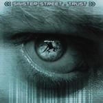

| Artist: | Sinister Street |
| Title: | Trust |
| Label: | Musea FGBG4431 |
| Length(s): | 62 minutes |
| Year(s) of release: | 2002 |
| Month of review: | [08/2002] |
| 1) | Song For A Day | 8.22 |
| 2) | Thin Ice | 5.50 |
| 3) | Lost For Words | 6.16 |
| 4) | Trust | 5.14 |
| 5) | Two In One | 8.23 |
| 6) | Midas Touch | 4.38 |
| 7) | Go The Distance | 4.20 |
| 8) | Turning Tide | 5.39 |
| 9) | Through The Looking Glass | 7.54 |
| 10) | Two In One (radio Version) | 5.24 |
Thin Ice starts near acoustically, to only be helped into action by guitars. This track seems to be more a succession of moments, than it is a well built whole.
Lost For Words starts with a rather intimate feel, but as it moves on, it sort of grows, making itself more known, with some pretty impressive instrumental sections. More than the previous tracks, this is a composed whole.
Trust from the start sounds like the typical rock instrumental you would hear fifteen years ago from a prog rock oriented band. Not bad, but I could have done with a bit more originality.
Two In One has certain unexpected gayity and lightness, not in the least brought on by using mostly acoustic instruments. The instrumental mid section shirks the acousticality, by bringing on the keyboards, but the openness remains. The return of the vocal chorus seems to disrupt all this though, bringing up regret for the ending of the mid section.
Being a somewhat shorter track, Midas Touch moves towards its goal just a tad faster, being a somewhat more rocky and riffy track than what's gone before, which goes even more for Go The Distance, which is plain poppy. In some of the earlier tracks, the drums were somewhat choppy already, but since they're mixed a little too much to the foreground, this becomes irritatingly apparent on this track. Not an asset.
Turning Tide interchanges tranquil sections with more direct ones, on the one hand creating a nice mix, but at times diminishing what could have been on the other. Especially the carrying keys on this one are strong.
The official closer Through The Looking Glass starts out rather subdued, showing an underlying tension, which is relieved by the breaking through of the guitar. Though drums start roaring their not always pretty head again, the track develops, even bringing on some mellotron sounds. They kept the best for last.
The radio version of Two In One is, as might not surprise one, somewhat briefer than the original. Since the original version stretches the idea behind the track somewhat, this more concise version has its advantages.
The band have their own website at www.sinisterstreet.com